Change analysis for Burkina Faso for PRIMAP-hist v2.8_final compared
to v2.7_final
This changelog is published under the creative commons non-commercial
share alike license. For more information see creativecommons.org.
Overview over
emissions by sector and gas
The following figures show the aggregate national total emissions
excluding LULUCF AR6GWP100 for the country reported priority scenario.
The dotted lines show the v2.7_final data.
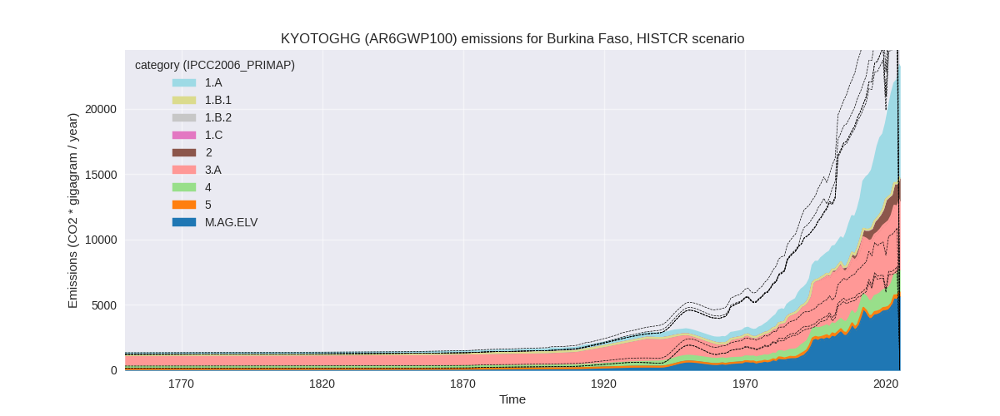
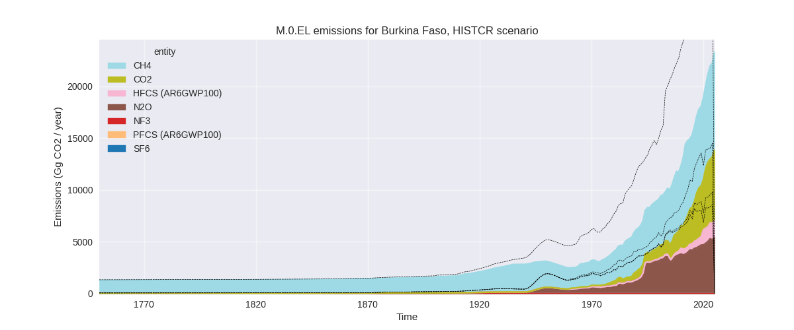
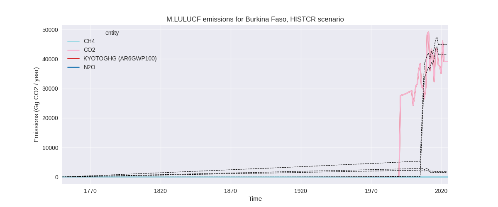
The following figures show the aggregate national total emissions
excluding LULUCF AR6GWP100 for the third party priority scenario. The
dotted lines show the v2.7_final data.
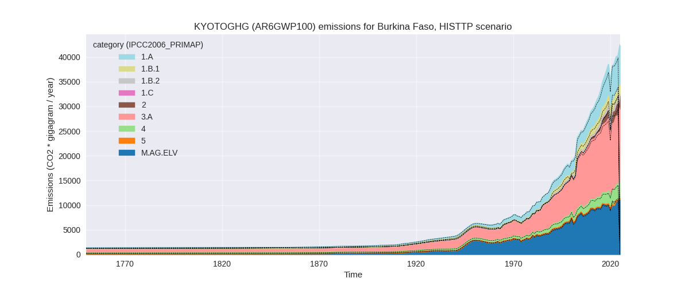
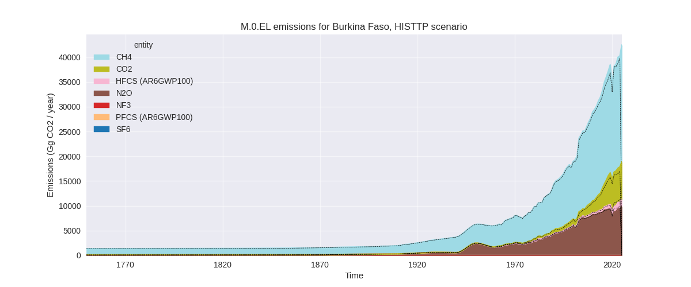
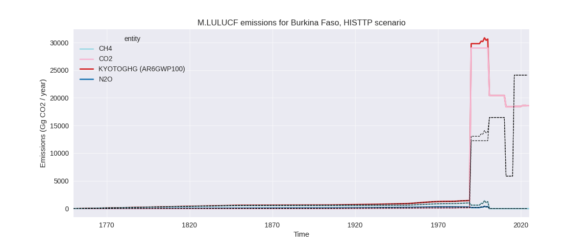
Used country reported data
The changelog with this information is available upon request for
non-commercial customers. Paying commercial customers will be provided
with the information.
Overview over changes
In the country reported priority scenario we have the following
changes for aggregate Kyoto GHG and national total emissions excluding
LULUCF (M.0.EL):
- Emissions in 2024 have changed by -35.8%% (-12372.18 Gg CO2 / year)
- Emissions in 1990-2024 have changed by -43.1%% (-9491.43 Gg CO2 / year)
In the third party priority scenario we have the following changes
for aggregate Kyoto GHG and national total emissions excluding LULUCF
(M.0.EL):
- Emissions in 2024 have changed by 1.2%% (458.96 Gg CO2 / year)
- Emissions in 1990-2024 have changed by 2.1%% (537.07 Gg CO2 / year)
Most
important changes per scenario and time frame
In the country reported priority scenario the
following sector-gas combinations have the highest absolute impact on
national total KyotoGHG (AR6GWP100) emissions in 2024
(up to 10 with either at least 0.2% impact on total emissions or at
least 20% change):
- 1: 3.A, CH4 with -10336.11 Gg CO2 / year (-71.7%, -29.9%)
- 2: M.AG.ELV, N2O with -4295.27 Gg CO2 / year (-56.5%, -12.4%)
- 3: M.AG.ELV, CH4 with 1950.33 Gg CO2 / year (4328.7%, 5.6%)
- 4: 1.B.1, CH4 with -1770.21 Gg CO2 / year (-100.0%, -5.1%)
- 5: 4, CH4 with -1504.47 Gg CO2 / year (-54.5%, -4.3%)
- 6: 1.A, CO2 with 1367.84 Gg CO2 / year (30.2%, 4.0%)
- 7: 3.A, N2O with 846.97 Gg CO2 / year (356.1%, 2.4%)
- 8: 1.A, CH4 with 605.07 Gg CO2 / year (55.1%, 1.7%)
- 9: 2, HFCS (AR6GWP100) with 421.07 Gg CO2 / year (34.7%, 1.2%)
- 10: 4, CO2 with 252.17 Gg CO2 / year (99670.6%, 0.7%)
In the country reported priority scenario the
following sector-gas combinations have the highest absolute impact on
national total KyotoGHG (AR6GWP100) emissions in
1990-2024 (up to 10 with either at least 0.1% impact on
total emissions or at least 10% change):
- 1: 3.A, CH4 with -6387.98 Gg CO2 / year (-65.3%, -29.0%)
- 2: M.AG.ELV, N2O with -2889.24 Gg CO2 / year (-55.8%, -13.1%)
- 3: 1.B.1, CH4 with -1296.51 Gg CO2 / year (-100.0%, -5.9%)
- 4: 4, CH4 with -921.67 Gg CO2 / year (-55.4%, -4.2%)
- 5: M.AG.ELV, CH4 with 813.40 Gg CO2 / year (2834.4%, 3.7%)
- 6: 3.A, N2O with 509.43 Gg CO2 / year (201.1%, 2.3%)
- 7: 2, HFCS (AR6GWP100) with 164.66 Gg CO2 / year (51.0%, 0.7%)
- 8: 4, CO2 with 147.56 Gg CO2 / year (157781.7%, 0.7%)
- 9: 1.A, CH4 with 142.76 Gg CO2 / year (17.2%, 0.6%)
- 10: 1.A, CO2 with 116.84 Gg CO2 / year (5.7%, 0.5%)
In the third party priority scenario the following
sector-gas combinations have the highest absolute impact on national
total KyotoGHG (AR6GWP100) emissions in 2024 (up to 10
with either at least 0.2% impact on total emissions or at least 20%
change):
- 1: 3.A, CH4 with -1530.21 Gg CO2 / year (-10.1%, -3.8%)
- 2: 1.A, CO2 with 1044.80 Gg CO2 / year (23.5%, 2.6%)
- 3: M.AG.ELV, N2O with -704.59 Gg CO2 / year (-8.0%, -1.8%)
- 4: 1.A, CH4 with 400.81 Gg CO2 / year (31.2%, 1.0%)
- 5: 1.B.1, CH4 with 369.70 Gg CO2 / year (20.9%, 0.9%)
- 6: 4, CO2 with 252.17 Gg CO2 / year (99670.6%, 0.6%)
- 7: 4, CH4 with 251.11 Gg CO2 / year (10.7%, 0.6%)
- 8: M.AG.ELV, CH4 with 106.88 Gg CO2 / year (4.8%, 0.3%)
- 9: M.AG.ELV, CO2 with 83.79 Gg CO2 / year (inf%, 0.2%)
- 10: 5, N2O with 81.65 Gg CO2 / year (29.8%, 0.2%)
In the third party priority scenario the following
sector-gas combinations have the highest absolute impact on national
total KyotoGHG (AR6GWP100) emissions in 1990-2024 (up
to 10 with either at least 0.1% impact on total emissions or at least
10% change):
- 1: 4, CO2 with 147.56 Gg CO2 / year (157781.7%, 0.6%)
- 2: 3.A, CH4 with -143.89 Gg CO2 / year (-1.4%, -0.6%)
- 3: 1.B.1, CH4 with 140.96 Gg CO2 / year (10.9%, 0.5%)
- 4: 1.A, CO2 with 135.16 Gg CO2 / year (6.6%, 0.5%)
- 5: 1.A, CH4 with 109.69 Gg CO2 / year (8.3%, 0.4%)
- 6: M.AG.ELV, CO2 with 80.45 Gg CO2 / year (inf%, 0.3%)
- 7: 2, CO2 with 79.99 Gg CO2 / year (21.5%, 0.3%)
- 8: M.AG.ELV, N2O with -74.65 Gg CO2 / year (-1.2%, -0.3%)
Notes on data changes
The changelog with this information is available upon request for
non-commercial customers. Paying commercial customers will be provided
with the information.
Changes by sector and gas
For each scenario and time frame the changes are displayed for all
individual sectors and all individual gases. In the sector plot we use
aggregate Kyoto GHGs in AR6GWP100. In the gas plot we usenational total
emissions without LULUCF.
country reported scenario
2024
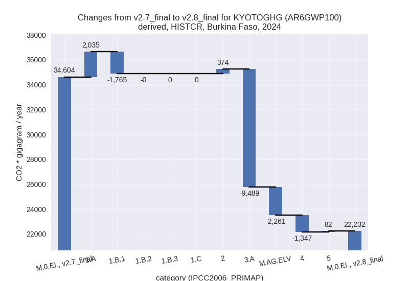
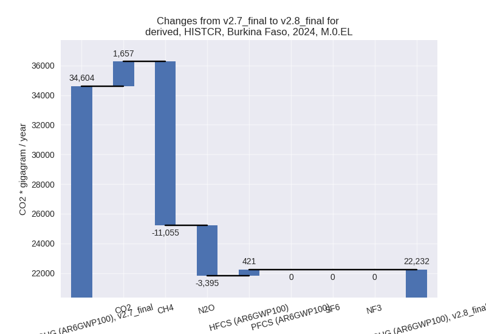
1990-2024
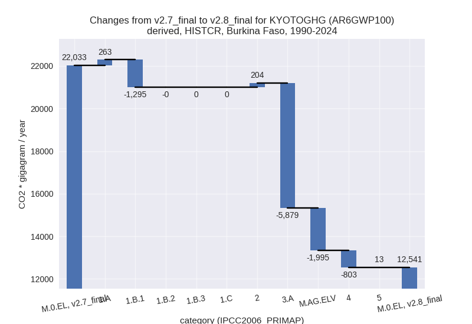
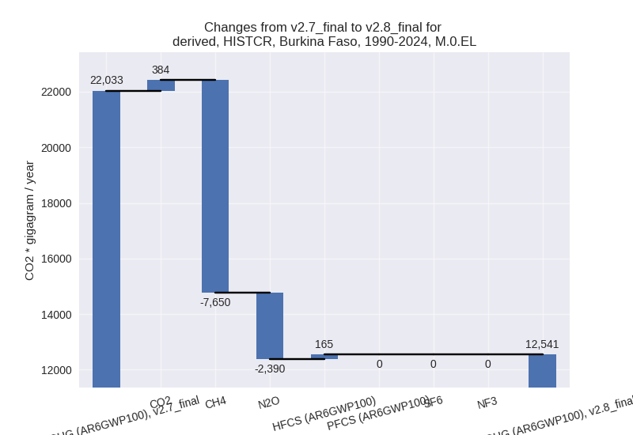
third party scenario
2024
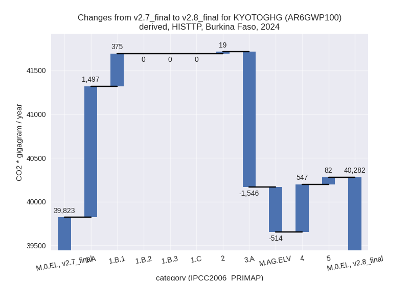
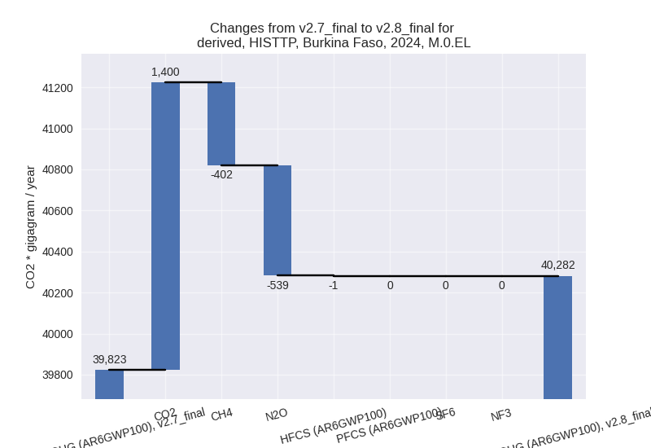
1990-2024
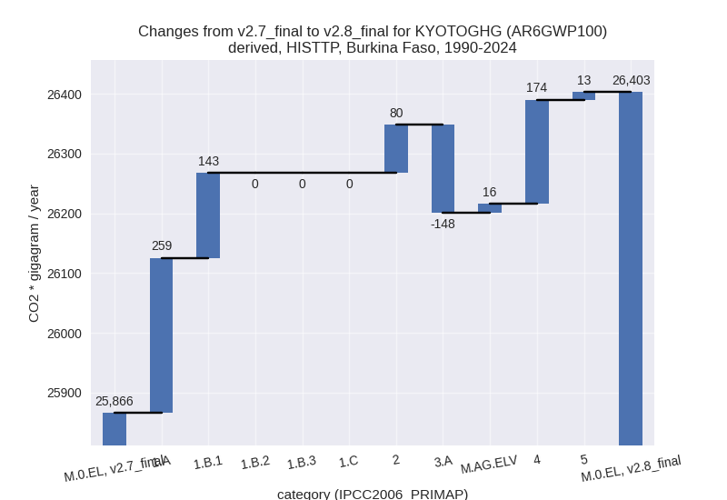
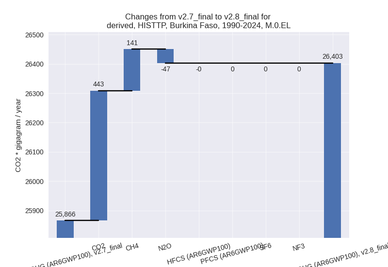
Detailed changes for the
scenarios:
country reported scenario
(HISTCR):
Most important changes
per time frame
For 2024 the following sector-gas combinations have
the highest absolute impact on national total KyotoGHG (AR6GWP100)
emissions in 2024 (up to 20 with either at least 0.2%
impact on total emissions or at least 20% change):
- 1: 3.A, CH4 with -10336.11 Gg CO2 / year (-71.7%), -29.9%)
- 2: M.AG.ELV, N2O with -4295.27 Gg CO2 / year (-56.5%), -12.4%)
- 3: M.AG.ELV, CH4 with 1950.33 Gg CO2 / year (4328.7%), 5.6%)
- 4: 1.B.1, CH4 with -1770.21 Gg CO2 / year (-100.0%), -5.1%)
- 5: 4, CH4 with -1504.47 Gg CO2 / year (-54.5%), -4.3%)
- 6: 1.A, CO2 with 1367.84 Gg CO2 / year (30.2%), 4.0%)
- 7: 3.A, N2O with 846.97 Gg CO2 / year (356.1%), 2.4%)
- 8: 1.A, CH4 with 605.07 Gg CO2 / year (55.1%), 1.7%)
- 9: 2, HFCS (AR6GWP100) with 421.07 Gg CO2 / year (34.7%), 1.2%)
- 10: 4, CO2 with 252.17 Gg CO2 / year (99670.6%), 0.7%)
- 11: 4, N2O with -95.09 Gg CO2 / year (-44.9%), -0.3%)
- 12: M.AG.ELV, CO2 with 83.79 Gg CO2 / year (inf%), 0.2%)
- 13: 5, N2O with 81.65 Gg CO2 / year (29.8%), 0.2%)
- 14: 1.A, N2O with 61.96 Gg CO2 / year (24.7%), 0.2%)
- 15: 2, CO2 with -46.77 Gg CO2 / year (-26.4%), -0.1%)
- 16: 1.B.1, N2O with 4.90 Gg CO2 / year (20.9%), 0.0%)
- 17: 1.B.2, CH4 with -0.01 Gg CO2 / year (-100.0%), -0.0%)
- 18: 1.B.2, CO2 with -0.00 Gg CO2 / year (-100.0%), -0.0%)
For 1990-2024 the following sector-gas combinations
have the highest absolute impact on national total KyotoGHG (AR6GWP100)
emissions in 1990-2024 (up to 20 with either at least
0.1% impact on total emissions or at least 10% change):
- 1: 3.A, CH4 with -6387.98 Gg CO2 / year (-65.3%), -29.0%)
- 2: M.AG.ELV, N2O with -2889.24 Gg CO2 / year (-55.8%), -13.1%)
- 3: 1.B.1, CH4 with -1296.51 Gg CO2 / year (-100.0%), -5.9%)
- 4: 4, CH4 with -921.67 Gg CO2 / year (-55.4%), -4.2%)
- 5: M.AG.ELV, CH4 with 813.40 Gg CO2 / year (2834.4%), 3.7%)
- 6: 3.A, N2O with 509.43 Gg CO2 / year (201.1%), 2.3%)
- 7: 2, HFCS (AR6GWP100) with 164.66 Gg CO2 / year (51.0%), 0.7%)
- 8: 4, CO2 with 147.56 Gg CO2 / year (157781.7%), 0.7%)
- 9: 1.A, CH4 with 142.76 Gg CO2 / year (17.2%), 0.6%)
- 10: 1.A, CO2 with 116.84 Gg CO2 / year (5.7%), 0.5%)
- 11: M.AG.ELV, CO2 with 80.45 Gg CO2 / year (inf%), 0.4%)
- 12: 2, CO2 with 39.31 Gg CO2 / year (49.5%), 0.2%)
- 13: 4, N2O with -28.85 Gg CO2 / year (-22.7%), -0.1%)
- 14: 1.B.1, N2O with 1.87 Gg CO2 / year (10.9%), 0.0%)
- 15: 1.B.2, CH4 with -0.01 Gg CO2 / year (-100.0%), -0.0%)
- 16: 1.B.2, CO2 with -0.00 Gg CO2 / year (-100.0%), -0.0%)
Changes in the main sectors for aggregate KyotoGHG (AR6GWP100)
are
- 1: Total sectoral emissions in 2022 are 7729.39 Gg
CO2 / year which is 36.5% of M.0.EL emissions. 2024 Emissions have
changed by 3.5% (269.55 Gg CO2 /
year). 1990-2024 Emissions have changed by -23.6% (-1031.49 Gg CO2 / year). For 2024
the changes per gas
are:
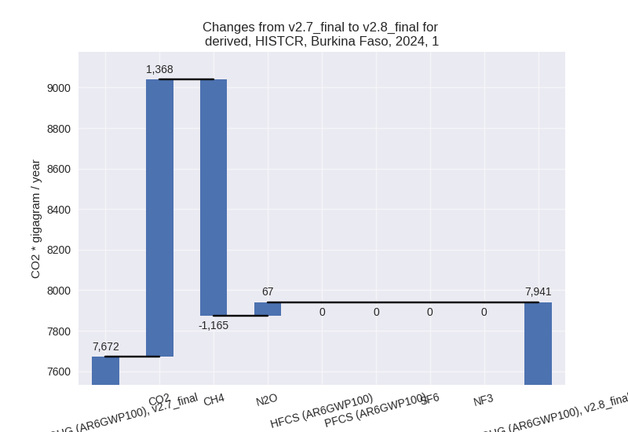
For 1990-2024 the changes per gas
are:
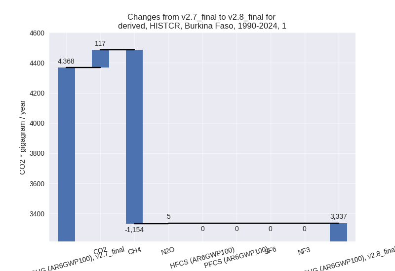
The changes come from the following subsectors:
- 1.A: Total sectoral emissions in 2022 are 7701.72
Gg CO2 / year which is 99.6% of category 1 emissions. 2024 Emissions
have changed by 34.6% (2034.87 Gg
CO2 / year). 1990-2024 Emissions have changed by 8.6% (263.16 Gg CO2 / year). For 2024 the
changes per gas
are:
For 1990-2024 the changes per gas
are:
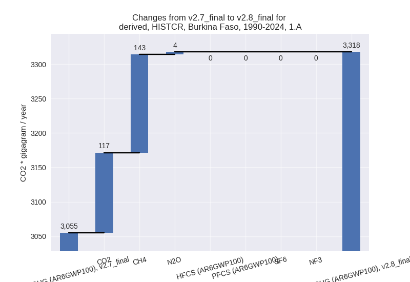
There is no subsector information available in PRIMAP-hist.
- 1.B.1: Total sectoral emissions in 2022 are 27.67
Gg CO2 / year which is 0.4% of category 1 emissions. 2024 Emissions have
changed by -98.4% (-1765.31 Gg CO2 /
year). 1990-2024 Emissions have changed by -98.5% (-1294.64 Gg CO2 / year). For 2024
the changes per gas
are:
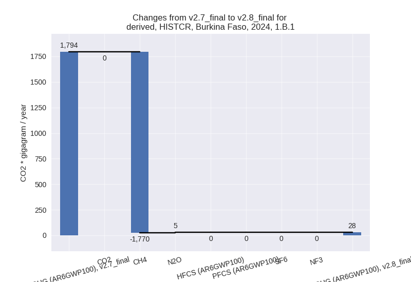
For 1990-2024 the changes per gas
are:
There is no subsector information available in PRIMAP-hist.
- 1.B.2: Total sectoral emissions in 2022 are 0.00 Gg
CO2 / year which is 0.0% of category 1 emissions. 2024 Emissions have
changed by -100.0% (-0.01 Gg CO2 /
year). 1990-2024 Emissions have changed by -100.0% (-0.01 Gg CO2 / year). For 2024
the changes per gas
are:
For 1990-2024 the changes per gas
are:
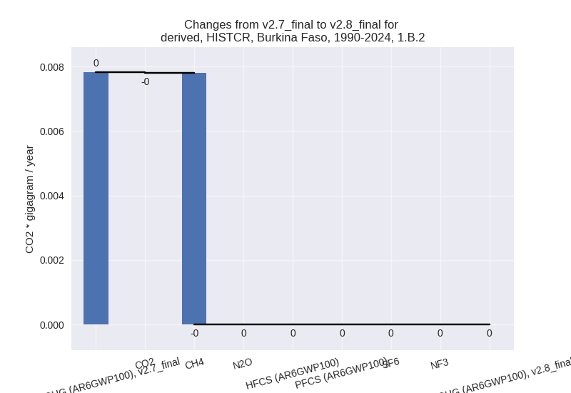
There is no subsector information available in PRIMAP-hist.
- 2: Total sectoral emissions in 2022 are 1587.04 Gg
CO2 / year which is 7.5% of M.0.EL emissions. 2024 Emissions have
changed by 26.9% (374.30 Gg CO2 /
year). 1990-2024 Emissions have changed by 50.7% (203.96 Gg CO2 / year). For 2024 the
changes per gas
are:
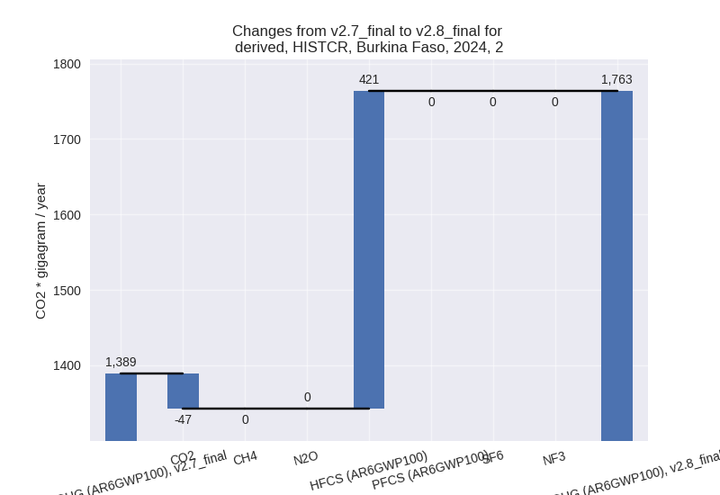
For 1990-2024 the changes per gas
are:
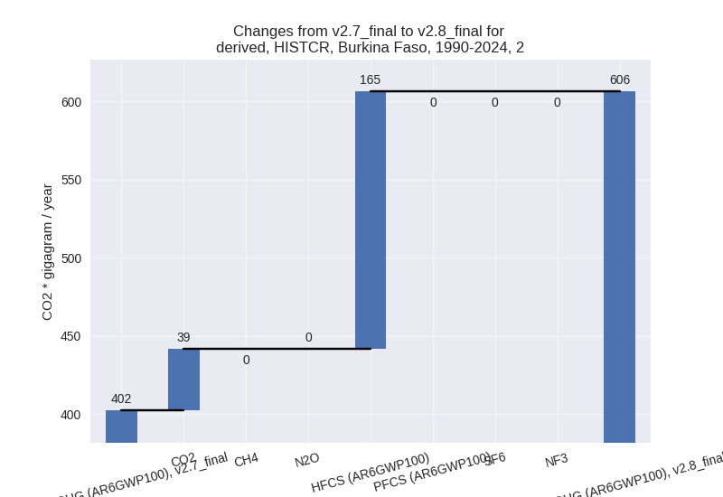
- M.AG: Total sectoral emissions in 2022 are 10050.35
Gg CO2 / year which is 47.5% of M.0.EL emissions. 2024 Emissions have
changed by -52.7% (-11750.28 Gg CO2
/ year). 1990-2024 Emissions have changed by -51.7% (-7873.95 Gg CO2 / year). For 2024
the changes per gas
are:
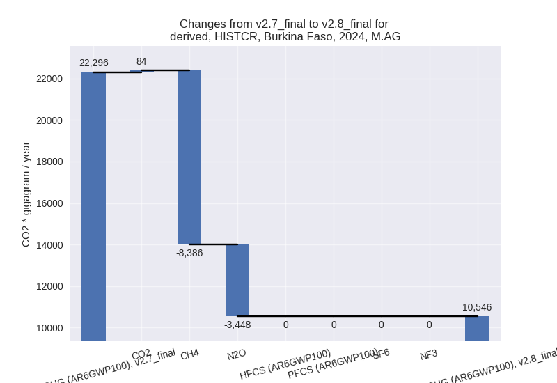
For 1990-2024 the changes per gas
are:
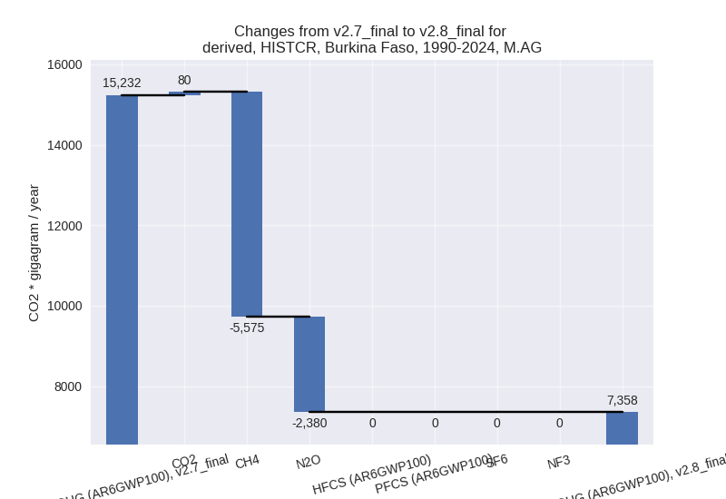
The changes come from the following subsectors:
- 3.A: Total sectoral emissions in 2022 are 5206.42
Gg CO2 / year which is 51.8% of category M.AG emissions. 2024 Emissions
have changed by -64.8% (-9489.14 Gg
CO2 / year). 1990-2024 Emissions have changed by -58.6% (-5878.55 Gg CO2 / year). For 2024
the changes per gas
are:
For 1990-2024 the changes per gas
are:
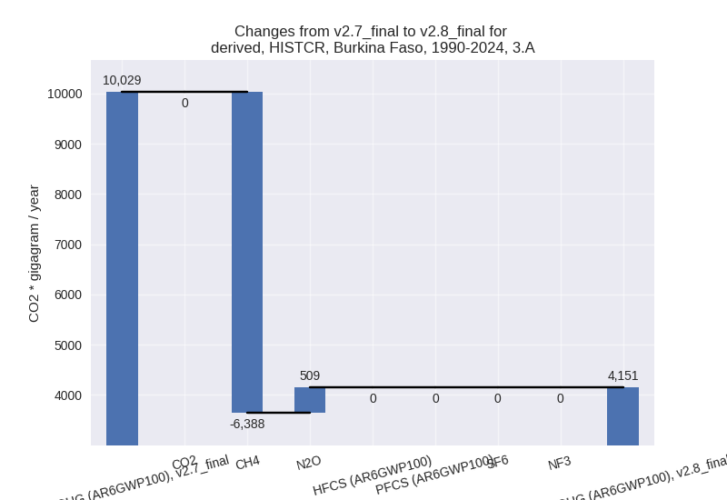
There is no subsector information available in PRIMAP-hist.
- M.AG.ELV: Total sectoral emissions in 2022 are
4843.93 Gg CO2 / year which is 48.2% of category M.AG emissions. 2024
Emissions have changed by -29.6%
(-2261.15 Gg CO2 / year). 1990-2024 Emissions have changed by -38.4% (-1995.39 Gg CO2 / year). For 2024
the changes per gas
are:
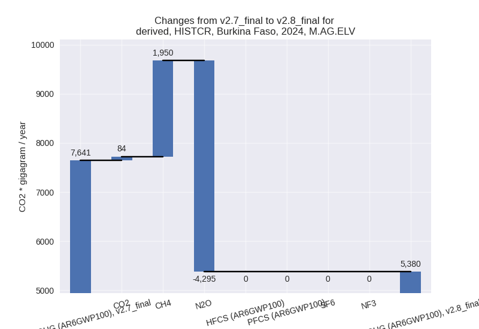
For 1990-2024 the changes per gas
are:
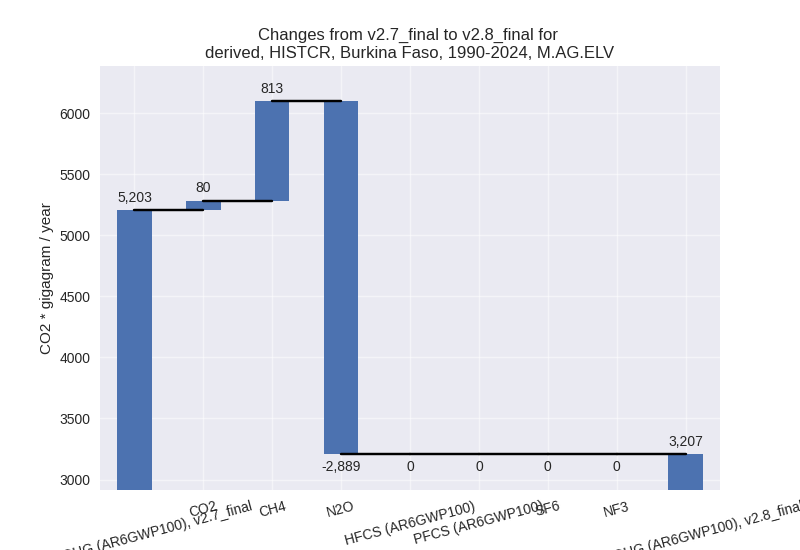
There is no subsector information available in PRIMAP-hist.
- 4: Total sectoral emissions in 2022 are 1520.78 Gg
CO2 / year which is 7.2% of M.0.EL emissions. 2024 Emissions have
changed by -45.3% (-1347.39 Gg CO2 /
year). 1990-2024 Emissions have changed by -44.9% (-802.96 Gg CO2 / year). For 2024
the changes per gas
are:
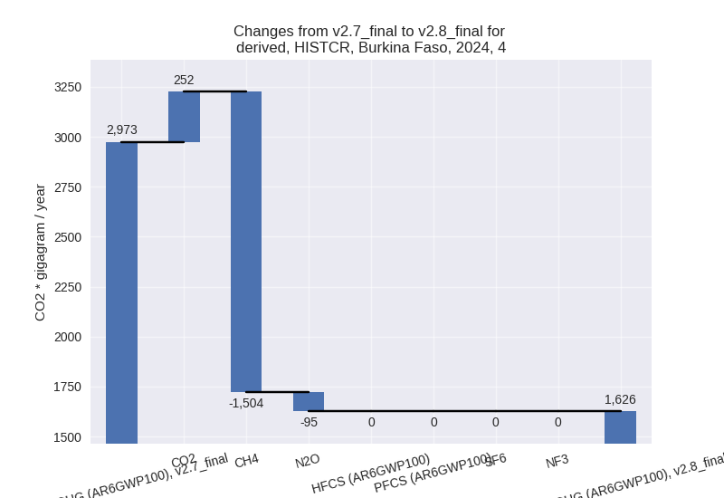
For 1990-2024 the changes per gas
are:
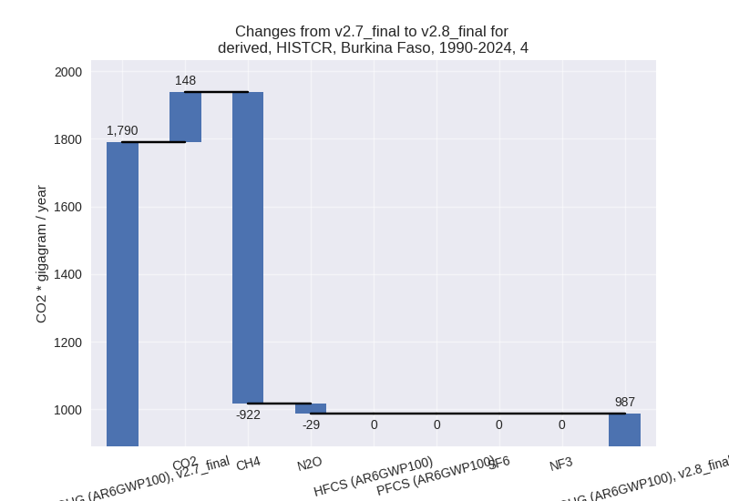
- 5: Total sectoral emissions in 2022 are 273.61 Gg
CO2 / year which is 1.3% of M.0.EL emissions. 2024 Emissions have
changed by 29.8% (81.65 Gg CO2 /
year). 1990-2024 Emissions have changed by 5.4% (13.00 Gg CO2 / year). For 2024 the
changes per gas
are:
For 1990-2024 the changes per gas
are:
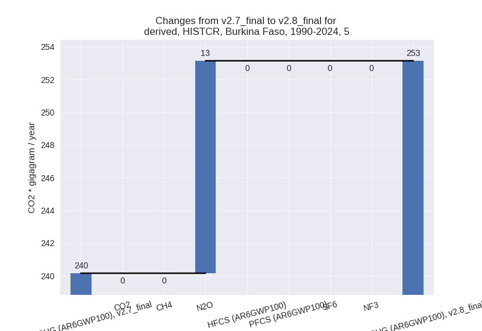
third party scenario (HISTTP):
Most important changes
per time frame
For 2024 the following sector-gas combinations have
the highest absolute impact on national total KyotoGHG (AR6GWP100)
emissions in 2024 (up to 20 with either at least 0.2%
impact on total emissions or at least 20% change):
- 1: 3.A, CH4 with -1530.21 Gg CO2 / year (-10.1%), -3.8%)
- 2: 1.A, CO2 with 1044.80 Gg CO2 / year (23.5%), 2.6%)
- 3: M.AG.ELV, N2O with -704.59 Gg CO2 / year (-8.0%), -1.8%)
- 4: 1.A, CH4 with 400.81 Gg CO2 / year (31.2%), 1.0%)
- 5: 1.B.1, CH4 with 369.70 Gg CO2 / year (20.9%), 0.9%)
- 6: 4, CO2 with 252.17 Gg CO2 / year (99670.6%), 0.6%)
- 7: 4, CH4 with 251.11 Gg CO2 / year (10.7%), 0.6%)
- 8: M.AG.ELV, CH4 with 106.88 Gg CO2 / year (4.8%), 0.3%)
- 9: M.AG.ELV, CO2 with 83.79 Gg CO2 / year (inf%), 0.2%)
- 10: 5, N2O with 81.65 Gg CO2 / year (29.8%), 0.2%)
- 11: 1.A, N2O with 51.64 Gg CO2 / year (23.1%), 0.1%)
- 12: 1.B.1, N2O with 4.90 Gg CO2 / year (20.9%), 0.0%)
For 1990-2024 the following sector-gas combinations
have the highest absolute impact on national total KyotoGHG (AR6GWP100)
emissions in 1990-2024 (up to 20 with either at least
0.1% impact on total emissions or at least 10% change):
- 1: 4, CO2 with 147.56 Gg CO2 / year (157781.7%), 0.6%)
- 2: 3.A, CH4 with -143.89 Gg CO2 / year (-1.4%), -0.6%)
- 3: 1.B.1, CH4 with 140.96 Gg CO2 / year (10.9%), 0.5%)
- 4: 1.A, CO2 with 135.16 Gg CO2 / year (6.6%), 0.5%)
- 5: 1.A, CH4 with 109.69 Gg CO2 / year (8.3%), 0.4%)
- 6: M.AG.ELV, CO2 with 80.45 Gg CO2 / year (inf%), 0.3%)
- 7: 2, CO2 with 79.99 Gg CO2 / year (21.5%), 0.3%)
- 8: M.AG.ELV, N2O with -74.65 Gg CO2 / year (-1.2%), -0.3%)
- 9: 1.B.1, N2O with 1.87 Gg CO2 / year (10.9%), 0.0%)
Changes in the main sectors for aggregate KyotoGHG (AR6GWP100)
are
- 1: Total sectoral emissions in 2022 are 9370.20 Gg
CO2 / year which is 24.3% of M.0.EL emissions. 2024 Emissions have
changed by 24.2% (1871.85 Gg CO2 /
year). 1990-2024 Emissions have changed by 8.3% (402.06 Gg CO2 / year). For 2024 the
changes per gas
are:
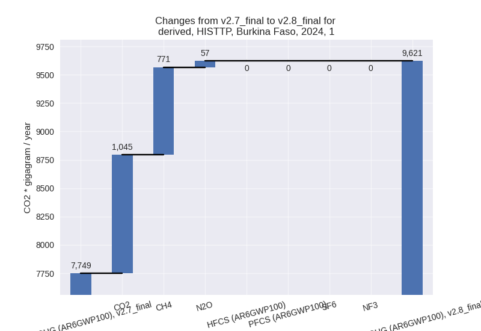
For 1990-2024 the changes per gas
are:
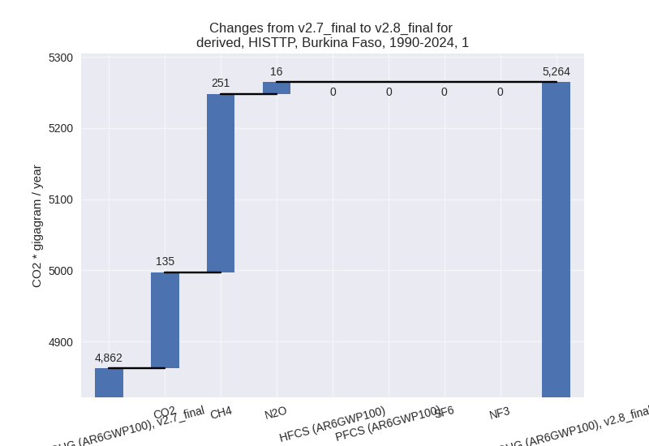
The changes come from the following subsectors:
- 1.A: Total sectoral emissions in 2022 are 7255.23
Gg CO2 / year which is 77.4% of category 1 emissions. 2024 Emissions
have changed by 25.1% (1497.25 Gg
CO2 / year). 1990-2024 Emissions have changed by 7.3% (259.23 Gg CO2 / year). For 2024 the
changes per gas
are:
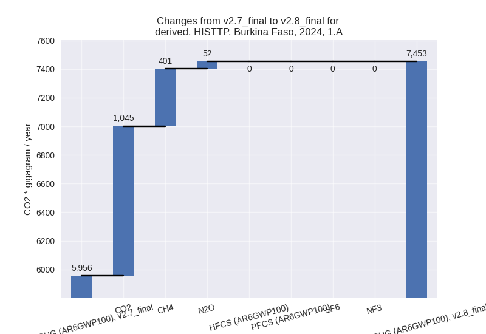
For 1990-2024 the changes per gas
are:
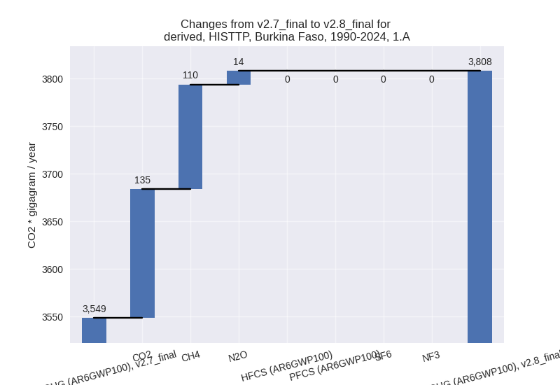
There is no subsector information available in PRIMAP-hist.
- 1.B.1: Total sectoral emissions in 2022 are 2114.95
Gg CO2 / year which is 22.6% of category 1 emissions. 2024 Emissions
have changed by 20.9% (374.60 Gg CO2
/ year). 1990-2024 Emissions have changed by 10.9% (142.83 Gg CO2 / year). For 2024 the
changes per gas
are:
For 1990-2024 the changes per gas
are:
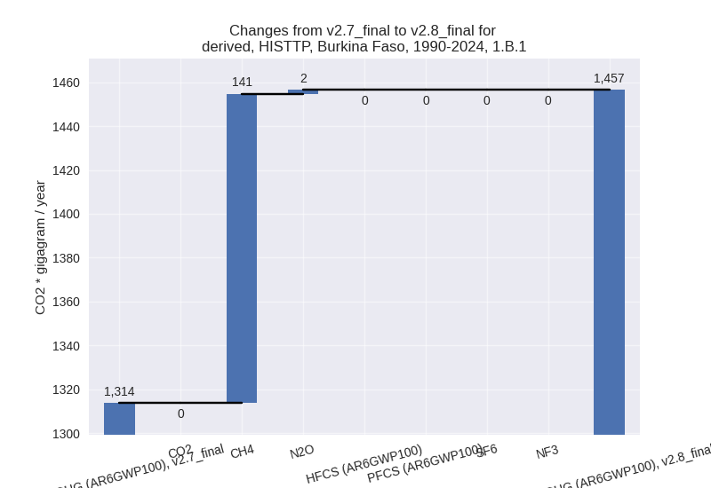
There is no subsector information available in PRIMAP-hist.
- 1.B.2: Total sectoral emissions in 2022 are 0.01 Gg
CO2 / year which is 0.0% of category 1 emissions. 2024 Emissions have
changed by 0.0% (0.00 Gg CO2 /
year). 1990-2024 Emissions have changed by 0.0% (0.00 Gg CO2 / year).
- 2: Total sectoral emissions in 2022 are 2518.01 Gg
CO2 / year which is 6.5% of M.0.EL emissions. 2024 Emissions have
changed by 0.7% (18.75 Gg CO2 /
year). 1990-2024 Emissions have changed by 9.8% (79.98 Gg CO2 / year). For 1990-2024
the changes per gas
are:
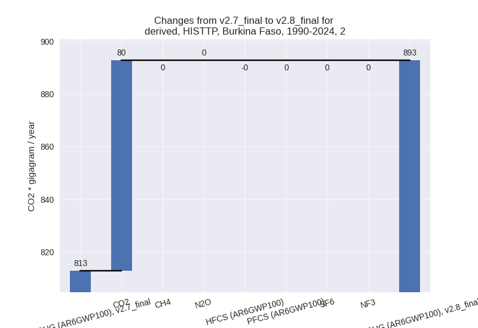
- M.AG: Total sectoral emissions in 2022 are 23395.14
Gg CO2 / year which is 60.6% of M.0.EL emissions. 2024 Emissions have
changed by -7.8% (-2060.34 Gg CO2 /
year). 1990-2024 Emissions have changed by -0.7% (-131.78 Gg CO2 / year). For 2024
the changes per gas
are:
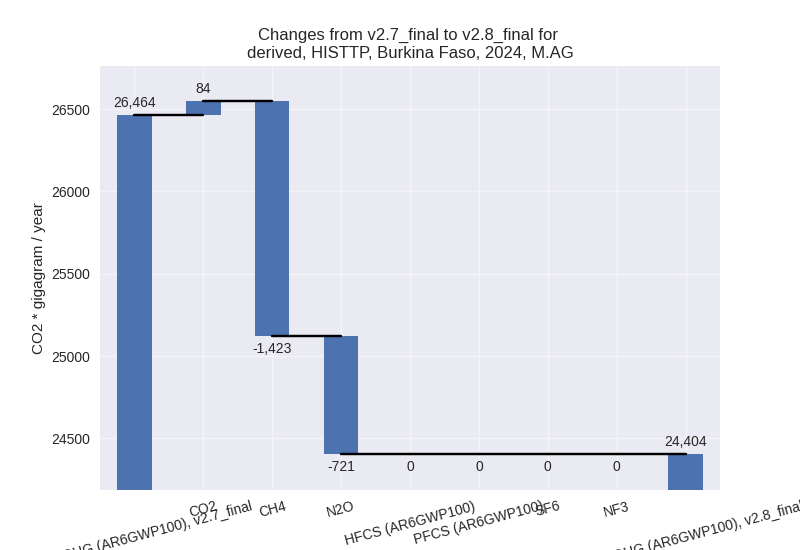
The changes come from the following subsectors:
- 3.A: Total sectoral emissions in 2022 are 13700.88
Gg CO2 / year which is 58.6% of category M.AG emissions. 2024 Emissions
have changed by -10.0% (-1546.42 Gg
CO2 / year). 1990-2024 Emissions have changed by -1.4% (-147.68 Gg CO2 / year). For 2024
the changes per gas
are:
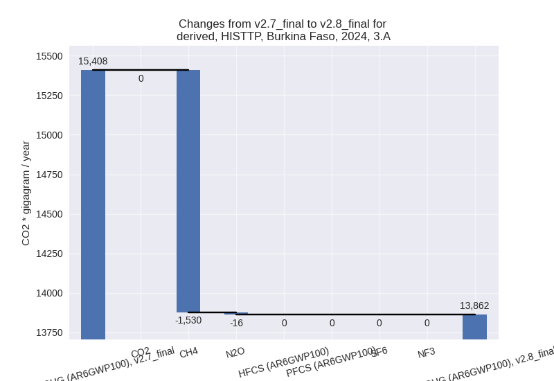
There is no subsector information available in PRIMAP-hist.
- M.AG.ELV: Total sectoral emissions in 2022 are
9694.26 Gg CO2 / year which is 41.4% of category M.AG emissions. 2024
Emissions have changed by -4.6%
(-513.92 Gg CO2 / year). 1990-2024 Emissions have changed by 0.2% (15.89 Gg CO2 / year). For 2024 the
changes per gas
are:
There is no subsector information available in PRIMAP-hist.
- 4: Total sectoral emissions in 2022 are 3018.99 Gg
CO2 / year which is 7.8% of M.0.EL emissions. 2024 Emissions have
changed by 20.3% (547.05 Gg CO2 /
year). 1990-2024 Emissions have changed by 11.1% (173.82 Gg CO2 / year). For 2024 the
changes per gas
are:
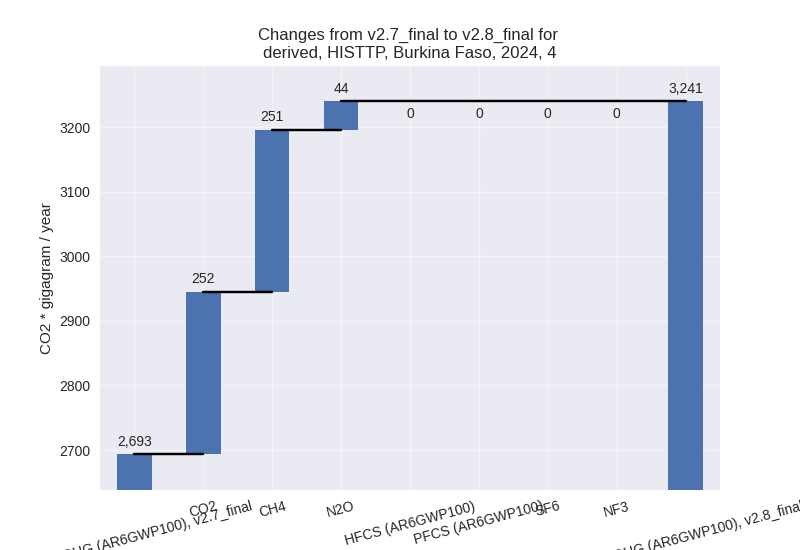
For 1990-2024 the changes per gas
are:
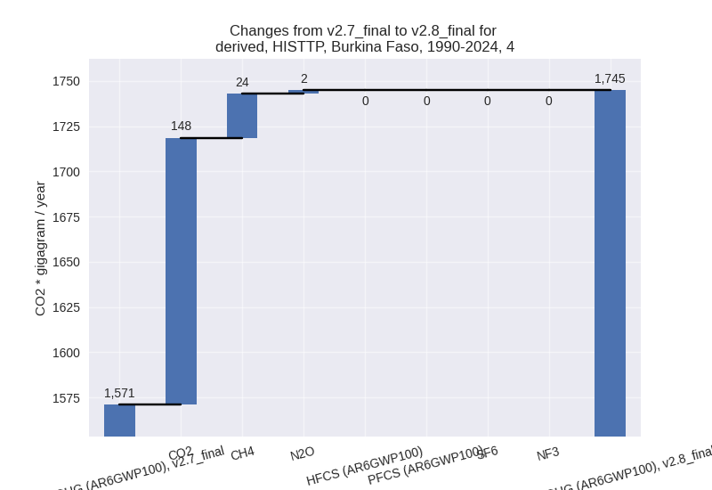
- 5: Total sectoral emissions in 2022 are 273.61 Gg
CO2 / year which is 0.7% of M.0.EL emissions. 2024 Emissions have
changed by 29.8% (81.65 Gg CO2 /
year). 1990-2024 Emissions have changed by 5.4% (13.00 Gg CO2 / year). For 2024 the
changes per gas
are:
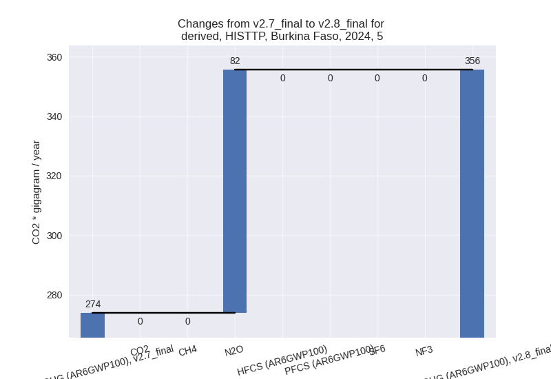
For 1990-2024 the changes per gas
are: